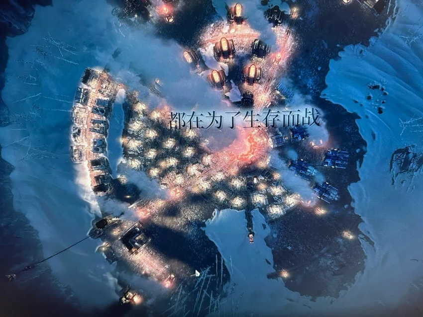
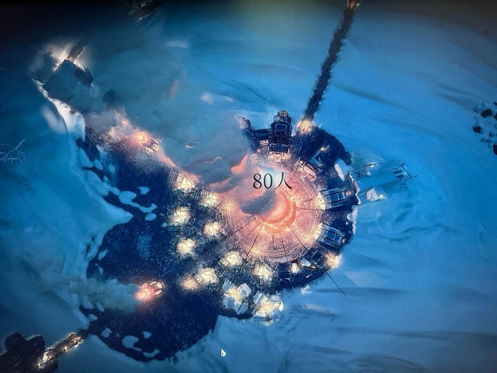

-
篮球骚年
冰汽时代第一次新家通关剧情还是蛮震撼的，后期因为三个煤矿要加班存煤导致不满上升，所以用不断处刑一个市民和警察局出兵巡逻的方法来降低不满，内心逐渐麻木，太真实的场景看着也很痛苦😖，那个父亲出发的时候我没有食物就没给，小女孩回来我就只能亲自告诉她，太痛了，确实值得一玩全文冰汽时代18954我才是米凯拉的锋刃呼叫环学家为小萌新答疑解惑1.阿褪需要梅琳娜才能把卢恩转化为力量， 那为什么 烧树献祭梅琳娜之后一样可以用卢恩升级。 2.打完黑剑只是释放了命定之死， 为什么只有打了 黑剑黄金树的刺才会被烧掉，而点燃火焰大锅只能 引燃黄金树却不能烧掉全文艾尔登法环239124